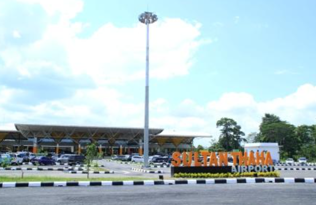

Sultan Thaha Airport (DJB) in Jambi City is the main air gateway of Jambi Province which has been managed by PT Angkasa Pura II since April 2007. Originally known as Paalmerah Airport (since the colonial era/1930s), the airport was renamed in honor of national hero Sultan Thaha Syaifuddin.

Jambi is a city on the island of Sumatra.
Jambi Province, Sumatra Island, Indonesia.
You can reach Jambi through Sultan Thaha Airport which connects the city with major cities in Indonesia.